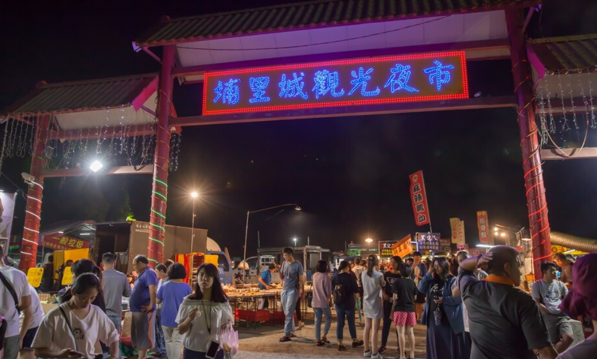
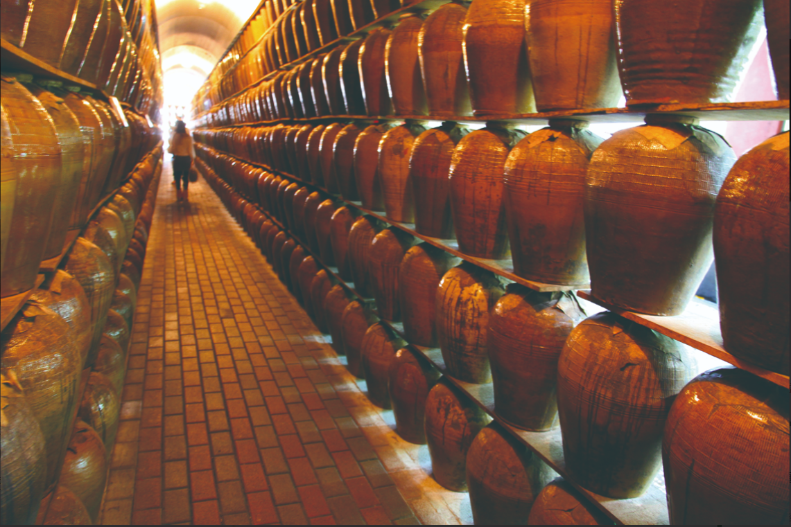
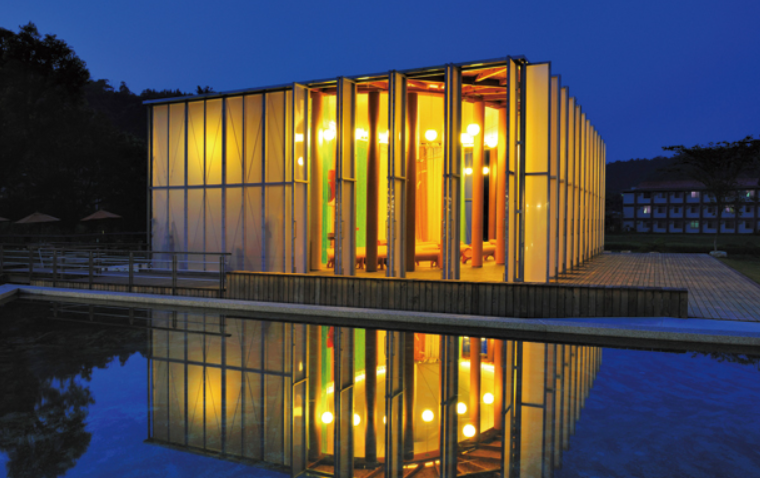
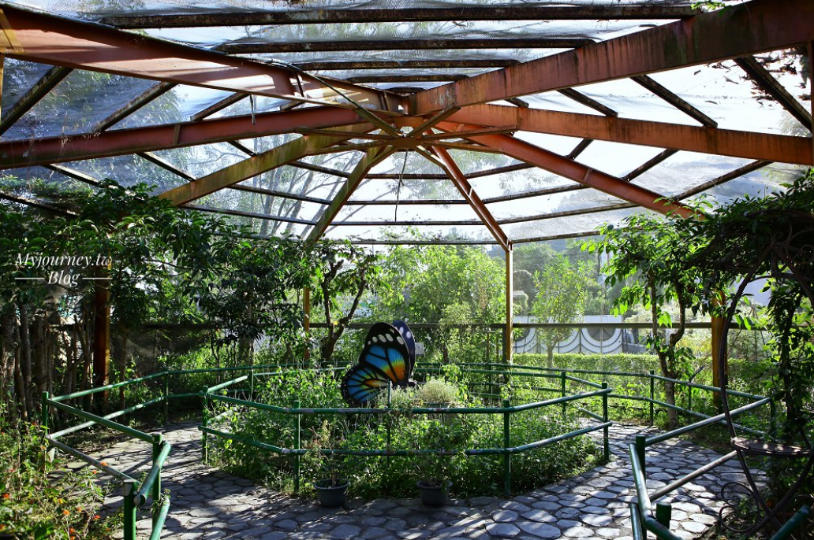
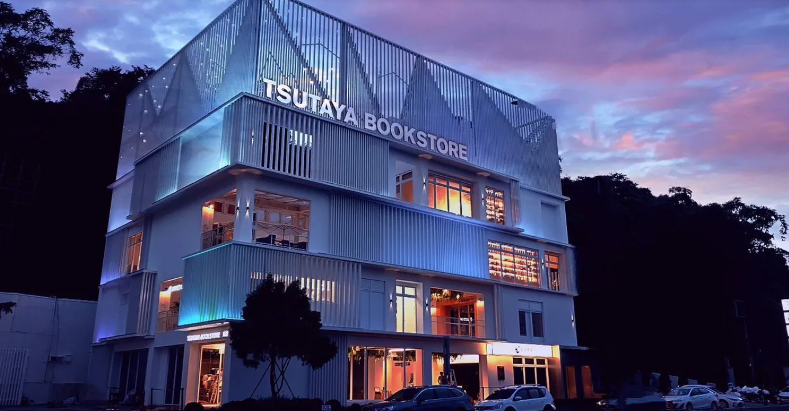
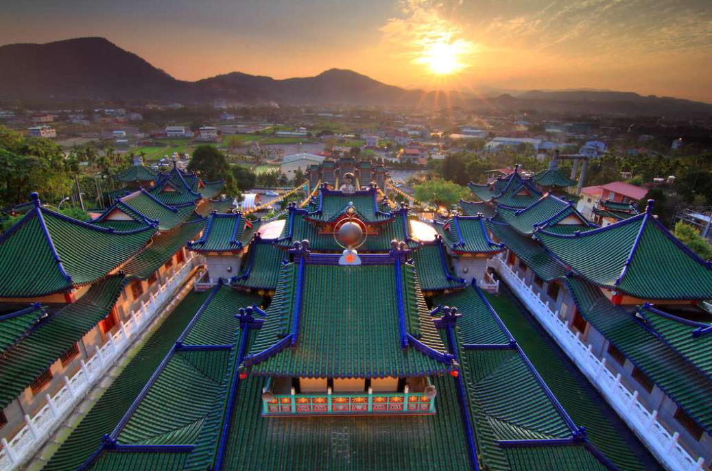
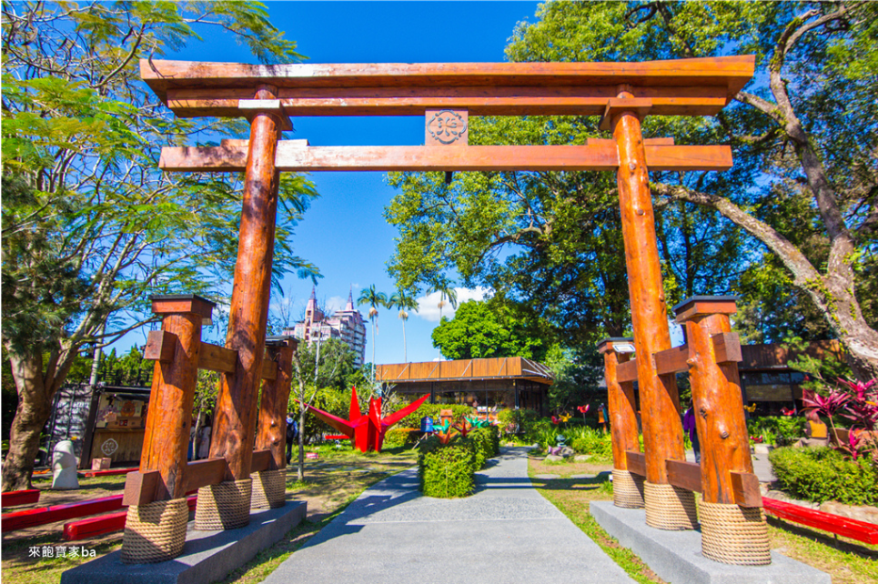
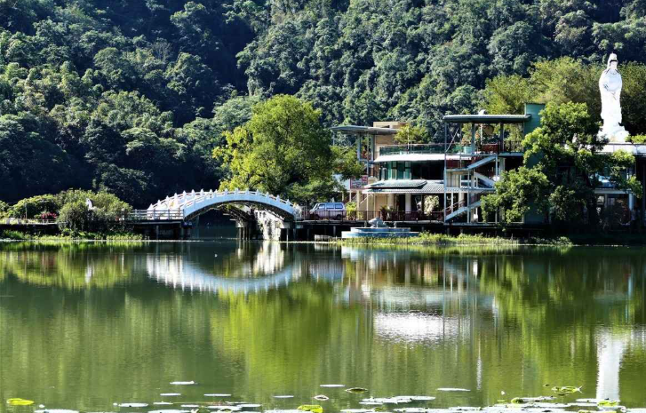

埔里目前的夜市主要是埔里夜市，是當地最熱鬧的美食聚集地
地址： 545南投縣埔里鎮信義路890號
營業時間：週五 週六 18：00～23：00
碗粿：當地特色，配上甜辣醬超有味
香腸串：炭烤香腸搭配獨門醬汁
炸物：像鹹酥雞、炸臭豆腐是超受歡迎的選擇
甜品：有手作糖葫蘆和台式刨冰
位於南投縣埔里鎮市區的酒廠，由臺灣菸酒公司經營，主要生產紹興酒、愛蘭白酒與愛蘭囍酒(女兒紅)，因此也有別稱為紹興酒的故鄉。
營業時間：周一～週日 9：00～17：00
具現代感的紙教堂，用58根紙管支撐建築本體，構成充滿幾何感的長方形迴廊，微微透光的天幕營造柔和又神聖的氛圍。
Cona's妮娜巧克力裡頭可參觀巧克力製作過程、巧克力DIY，是親子情侶旅遊必來中部景點。
木生昆蟲博物館緊鄰於牛耳藝術渡假村，館內珍藏了許多世界各地著名的蝴蝶和昆蟲標本，目前為世界上私人收藏最豐富的昆蟲博物館。
最新力作即將推出一座全新的生活式體驗商場，將座落於前往日月潭的必經之地。
氣勢磅礡的韓風廟宇風情加上一望無際的視野，成為人氣打卡地標。
南投埔里知名的旅遊景點，有提供浴衣體驗、用餐服務。
鯉魚潭位在南投埔里，是一處天然湖泊，在陽光照射下波光粼粼，水影間也可見青翠的山景，讓此處擁有「小西湖」的美譽。鯉魚潭四周所設置的環潭步道，全長2.2公里，步道平緩。除漫步在蓊鬱的林蔭下，也可選擇搭乘遊園小火車賞湖，欣賞湖光山色。
遠處群山層巒疊嶂，大片雲霧環繞，中心的埔里街景卻清晰可見、一覽無遺，宛若山水畫，蒼鬱清新、景緻優美，寬達160度遼闊的視野，帶你將整個埔里盆地盡收眼底。